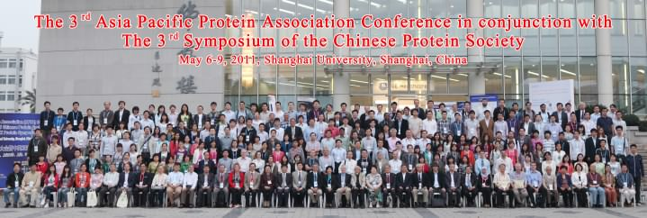

A summary of the third Asia Pacific Protein Association (APPA) Conference

A partial group photo of the participants of the 3rd APPA Conference (May 6-9, 2011, Shanghai, China)
The 3rd APPA Conference in conjunction with the 3rd Symposium of the CPS
Protein and Beyond
Attended by about 400 protein scientists from China (including Hong Kong), Chinese Taipei, Japan, Australia, New Zealand, Korea, Singapore, Thailand, Malaysia, The Philippines, as well as United States, United Kingdom, Russia, Germany, France, Italy, Finland, Portugal, Canada, Sweden, the 3rd APPA Conference was held May 6-9, 2011 in Shanghai University, Shanghai, China.
This meeting was organized by APPA and The Protein Society, and hosted by The Chinese Protein Society. Generous support was provided by the National Natural Science Foundation of China and Shanghai University, in addition to such commercial companies as GE Healthcare Life Sciences, Agilent Technologies Co., Ltd, and S&F（Shanghai）Purification Engineering Co., Ltd.
The keynote talks were given by the following six outstanding speakers:
- Prof. Peter Wright from the Scripps Research Institute, USA (“Folding, regulation, and interactions of intrinsically disordered proteins”);
- Prof. Sir Tom Blundell from the University of Cambridge, UK (“Structural biology and drug discovery: modulating multi-protein regulatory assemblies”);
- Prof. Keiji Tanaka from the Tokyo Metropolitan Institute of Medical Science, Japan (“In-depth study of structure and functions of eukaryotic proteasomes”);
- Prof. Yang Shi from the Harvard Medical School, USA (“Histone demethylases: mechanism of action and link to human disease”);
- Prof. Wolfgang Baumeister from the Max Plank Institute of Biochemistry, Germany (Electron Cryomicroscopy: from molecules to systems”);
- Prof. Xiaoliang Sunney Xie from Harvard University, USA and affiliated with Peking University, China (“Life at the single molecule level”).
The Conference covered the following ten themes:
- Protein biosynthesis, trafficking and quality control
- Protein folding, structure and dynamics
- Protein posttranslational modification and activity modulation
- Protein interaction, network and proteomics
- Protein machinery and action mechanism
- Protein design and engineering
- Protein real time and quantitative detection, and single molecule study
- Proteins in disease and drug discovery
- Protein applications in biotechnology and therapeutics
- Interdisciplinary study on proteins
A total of 40 scientists from 14 countries or areas gave talks at these ten sessions.
The opening ceremony, chaired by Prof. Zengyi Chang, Secretary-general of the 3rd APPA Conference, was addressed by the following speakers: Prof. Xinhui Yu, Chancellor of Shanghai University; Prof. Chih chen (Zhizhen) Wang, Chair of the organizing committee of the 3rd APPA Conference and president of the Chinese Protein Society; Prof. Yuji Goto, president of APPA; Prof. Authur Palmer III, former president of the Protein Society (on behalf of Prof. Daniel Raleigh, co-chair of the organizing committee of the 3rd APPA Conference and the current president of the Protein Society, who did not make to the meeting due to personal reasons); Prof. Zihe Rao, co-chair of the organizing committee and president of the Biophysical Society of China; Xian-En Zhang, director of the basic research department, Ministry of Science and Technology of China.
The closing ceremony, chaired by Prof. Genxi Li, the Executive Secretary-General of the 3rd APPA Conference, was addressed by Prof. Yuji Goto, President of APPA, Zhixin Wang, president of the Chinese Society of Biochemistry and Molecular Biology, Prof. Young Kee Kang, president of the Korea Protein Society (who will host the 4th APPA Conference, as decided at the executive council meeting of APPA held on May 5). Also spoke at the closing ceremony was the newly elected president of APPA, Prof. Zengyi Chang of Peking University, Beijing, China. Prof. Zengyi Chang, an executive council member of the Protein Society, starts his term as presidents of APPA and the Chinese Protein Society right after this meeting.
Meanwhile, to provide a forum for the young scholars, a special student/postdoc session was organized, with the speakers selected from those who had submitted abstracts. A judge committee selected the following three students for the best student oral presentation prizes: Yuichi Yoshimura from Osaka University, Japan; Shukun Luo from the National Institute of Biological Sciences, China; and Ping Cao from the State University of New York at Stony Brook, USA. Another three students were selected for the best poster prizes: Xi Wang from the Institute of Biophysics, Chinese Academy of Sciences, China; Sun Qin from the University of Science and Technology, China and Meixia Che from the Shanghai Institute of Biological Sciences, Chinese Academy of Science, China.
As a tradition of the Chinese Protein Society symposium, a concert of classic foreign and Chinese music, performed by the Shanghai Song and Dance Ensemble, was also organized. As another tradition of the Chinese Protein Society, right after this meeting five scholars, including Chih chen Wang (from Institute of Biophysics, Chinese Academy of Sciences), Zengyi Chang (Peking University), Jiangyun Wang (Institute of Biophysics, CAS), James Chou (Harvard University, affiliated with Peking University), Jiarui Wu (Shanghai Institute of Biological Sciences, CAS) went to Shanghai High School to talk about protein to the high school students. In addition, more than 300 of the meeting participants visited the 2010 Shanghai World expo site.
To celebrate the 100th anniversary of the Biochemical Society (of UK), a satellite Joint Sino-UK Protein Symposium, co-sponsored by the Biochemical Society and the Chinese Protein Society, was held in partial overlapping with the 3rd APPA Conference.
Two dinner parties were arranged to allow the key participants of these two meetings to get to know each other and build friendship. The local hosts from the Chinese protein science community tried their best to make the 3rd APPA conference and the Joint Sino-UK Protein Symposium a memorable one for all the participants. This spirit and the Chinese way of hospitality should have also been reflected from the smiling faces of the close to 150 highly motivated volunteer undergraduate students from the School of Life Sciences, Shanghai University, who were seen at the two airports, the three train stations, many subway stations, the hotels and the meeting venues.
Last but not least, as Prof. Chih chen Wang put in her welcome message, “It is always a pleasure to greet a friend from afar”. The Chinese Protein Society would like to thank APPA and the Protein Society for providing us such an opportunity to welcome such an outstanding protein scientists to China in general and to Shanghai in particular.
(This summary was jointly prepared by Zengyi Chang, President of APPA, and Yuji Goto, the past president of APPA)